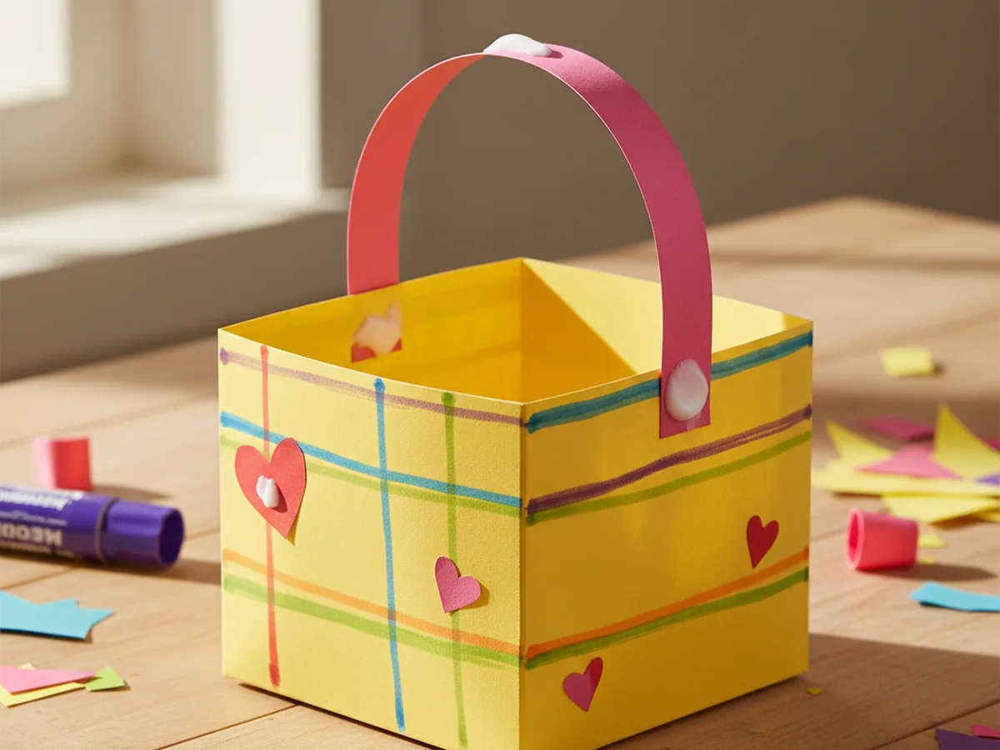
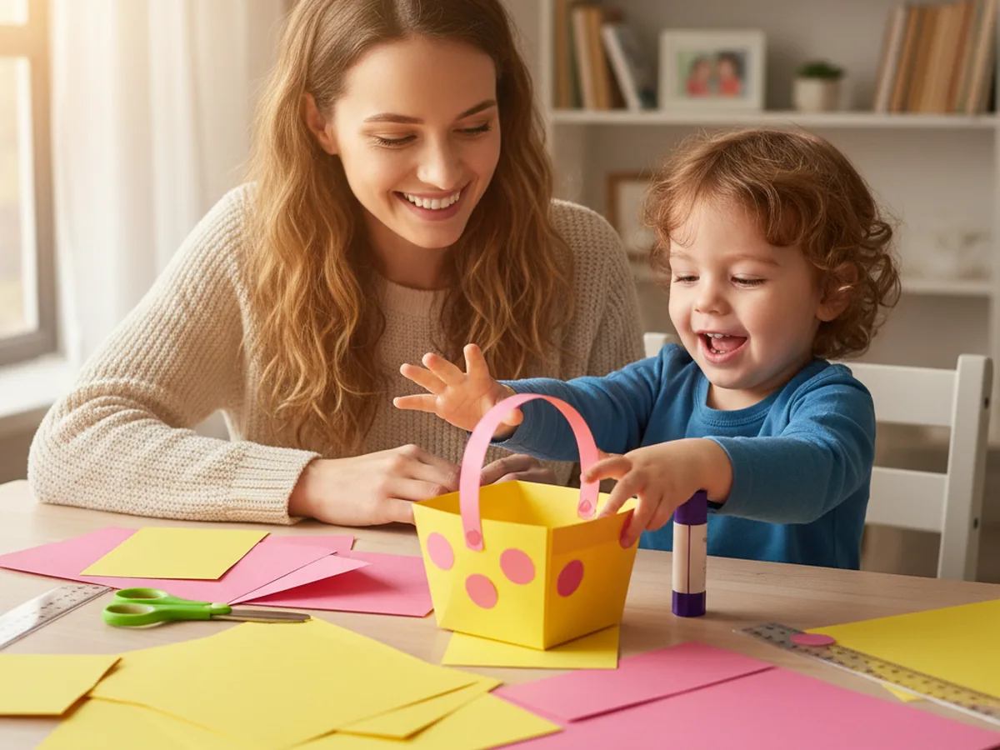
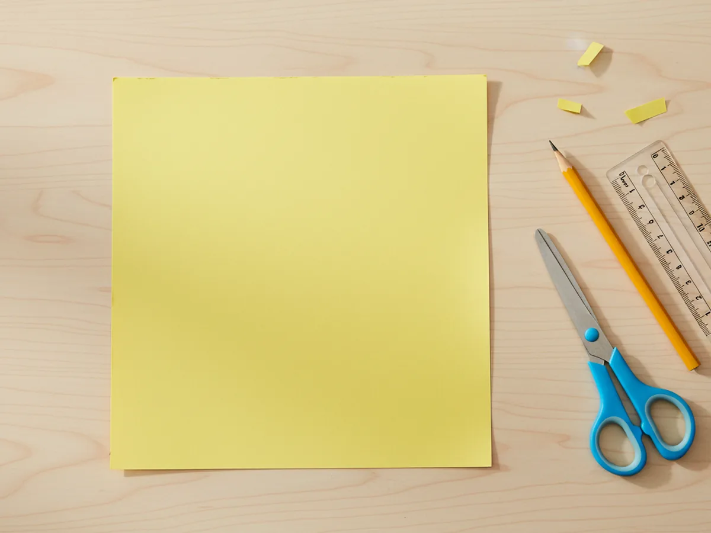
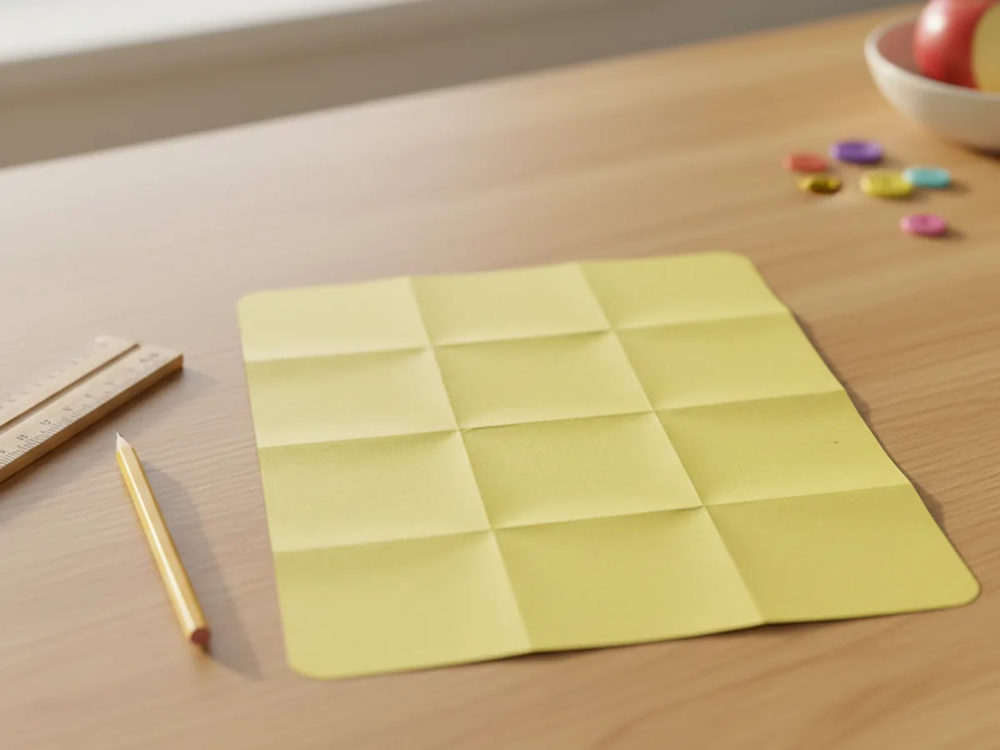
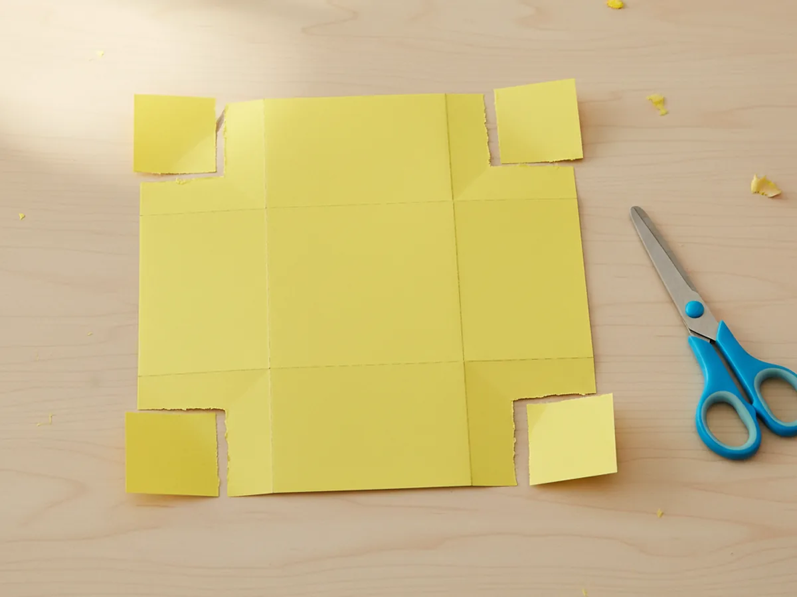
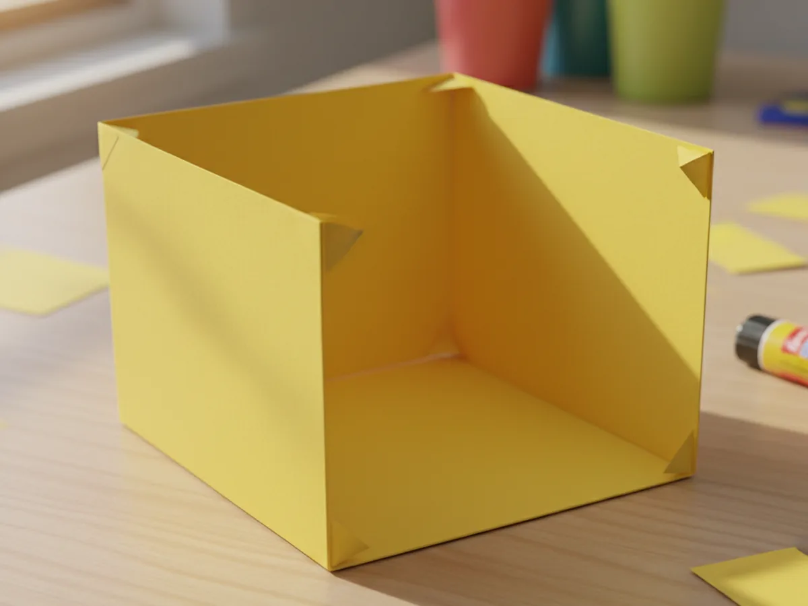
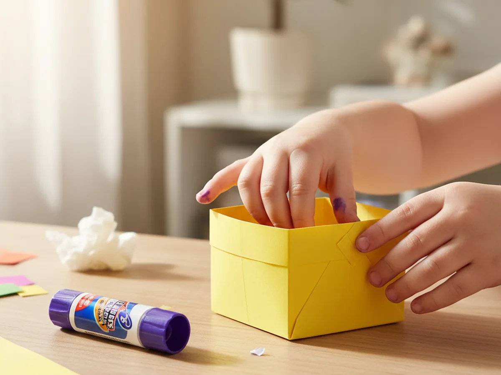
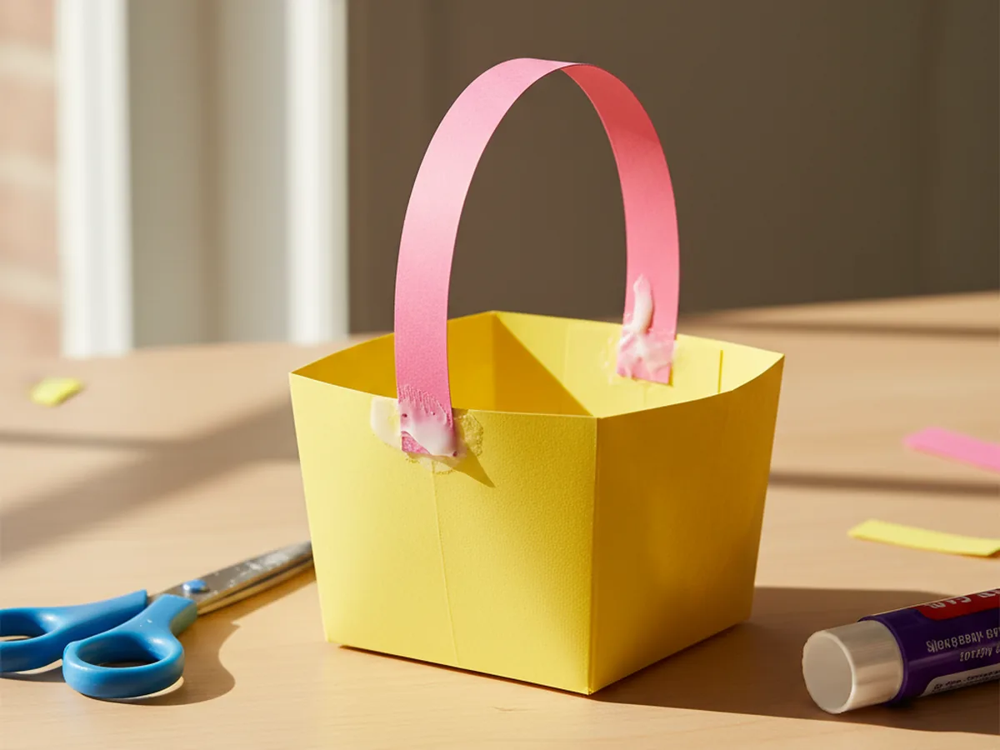
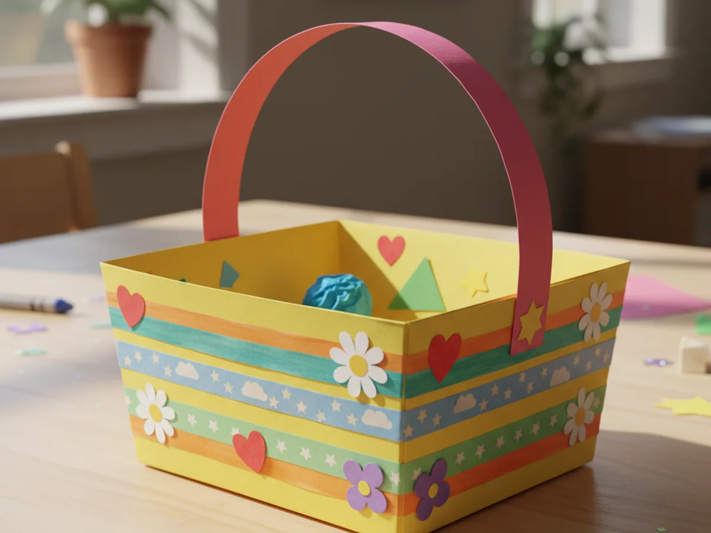

A little handmade basket is one of those crafts that feels almost magical to kids. One minute you have a flat sheet of paper, and the next minute there is a real basket sitting on the table, with a curved handle, ready to hold treasures. This paper basket craft comes together in about 30 minutes with supplies you probably already have at home, and it is a perfect project for ages 3 and up. 🧺 Even better, it stays calm, low-mess, and easy enough that your child will feel proud to say "I made this."
The finished basket is sturdy enough to hold small treats, paper flowers, cotton balls, or a handful of crayons. It makes a sweet little gift basket, a pretend picnic accessory, or a cheerful desk catch-all. And the steps are simple enough that you can repeat the craft on any rainy afternoon without needing a trip to the store.
Why Kids Love This Craft
There is something wonderfully satisfying about watching a flat piece of paper turn into a three-dimensional object. For a young child, this transformation feels almost like a magic trick. One moment the paper looks like any ordinary sheet, and the next it has walls, a bottom, and a handle. Kids love crafts with a clear "before and after" moment, and this paper basket craft delivers exactly that.
The hands-on folding and gluing also feel wonderful for little hands. Pressing firm creases, tucking corners together, and sticking a handle into place are all small actions with satisfying, visible results. Children who enjoy a sense of order will love how neat the basket looks when everything lines up, and children who love color will enjoy choosing which cardstock shade to use. 🎨
From a developmental standpoint, this paper basket DIY quietly works on fine motor skills, spatial awareness, and the ability to follow multi-step instructions. When your child fills the finished basket with their favorite tiny things, you will see that proud little grin that makes the whole afternoon feel worthwhile.

What You'll Need
Here is everything you need to make a cheerful paper basket craft at home with your child.
- Astrobrights Colored Cardstock, one sheet in a bright color for the basket body
- Crayola Construction Paper Bulk Pack, for the handle and decorative accents
- Fiskars Kids Blunt-Tip Scissors, rounded tips are perfect for little hands
- Elmer's School Glue Sticks, washable and easy for young children to use
- Crayola Broad Line Markers, for adding colorful patterns and details
- Pastel Washi Tape Set, optional but lovely for quick decorations
- Pencil and ruler, for marking neat fold lines on the cardstock
Step-by-Step Instructions
Follow these simple steps together and your little one will have a finished basket ready in half an hour.
Step 1: Cut a Square from Cardstock
Start by using a pencil and ruler to mark an 8-inch square on your sheet of colored cardstock. Cut carefully along the lines with your scissors to get a clean, even square. This will become the body of your paper basket craft. If your child is old enough to use scissors confidently, let them do the cutting themselves. A slightly wobbly edge only adds to the handmade charm.

Step 2: Fold the Square into a Tic-Tac-Toe Grid
Take your square and fold it into thirds from left to right. Press the folds firmly with your fingernail, then unfold. Turn the paper 90 degrees and fold it into thirds again. When you open the paper flat, you should see nine equal squares arranged in a tic-tac-toe pattern. These fold lines are the secret skeleton of your paper basket.

Step 3: Cut Slits on Four Sides
Look at your grid. Each side of the square has two fold lines running into it. Use your scissors to cut along those two fold lines from the outer edge inward, stopping when you reach the first intersection. Do this on all four sides. You will end up with a center square in the middle, four rectangular flaps sticking out from each side, and four small corner squares.

Step 4: Fold Up the Sides to Form the Basket
Now for the fun magic moment. Lift all four rectangular flaps straight up along the fold lines so they stand upright against each other. The center square is now the bottom of your basket, and the four flaps are the walls. The small corner squares will naturally fold inward as you do this. Hold everything in place with gentle pressure so the shape stays square.

Step 5: Glue the Corners Together
Take one small corner square and tuck it behind the adjacent wall. Apply glue with your glue stick to the outside of the corner square and press it firmly against the inside of the wall. Hold it in place for a few seconds until it feels secure. Repeat for all four corners. This is what keeps your paper basket sturdy and holds its box shape beautifully.

Step 6: Attach the Paper Handle
Cut a strip of construction paper roughly one inch wide and about 10 inches long. Choose a contrasting color for a cheerful look. Apply glue to each end of the strip, then press one end firmly to the inside of one wall and the other end to the inside of the opposite wall. Let it curve gently overhead like a little rainbow handle. This is what turns your box into a true paper basket.

Step 7: Decorate with Markers and Washi Tape
Now comes the best part for most kids. Let your child decorate the outside of the basket however they like with markers, stripes of washi tape, paper hearts, flowers, or small stickers. They can write their name, draw patterns, or cover the whole thing in rainbows. There is no wrong way. The decorating is what makes this paper basket craft feel uniquely theirs. ✨

Variations to Try
Mini Gift Basket: Shrink the starting square to 4 inches instead of 8 to make a tiny basket perfect for small treats, a handful of jellybeans, or a sweet note for grandparents. Two or three of these lined up make an adorable little gift trio.
Woven Paper Basket: For older children who want a bigger challenge, cut thin paper strips in two contrasting colors and weave them over and under across the bottom before folding up the walls. The result is a gorgeous textured basket that looks far more advanced than it actually is.
Seasonal Themed Basket: Turn the basket into a spring Easter basket with pastel colors and paper grass inside, a Halloween treat basket in orange and black, or a Valentine's basket in pink and red with paper hearts. The same template works beautifully for any season or celebration. 💕
Final Thoughts
A paper basket craft is one of those lovely little projects that keeps on giving. Your child gets a creative activity that delivers a real, usable object at the end. You get a calm, low-stress craft session and a sweet handmade keepsake that they will want to fill and refill with their tiny treasures. Do not be surprised if one basket turns into three by the end of the afternoon. Some crafts are simply too fun to make just once. 🌷
More Crafts You'll Love
If you enjoyed this project, here are two more easy paper crafts to try together.
Happy crafting!